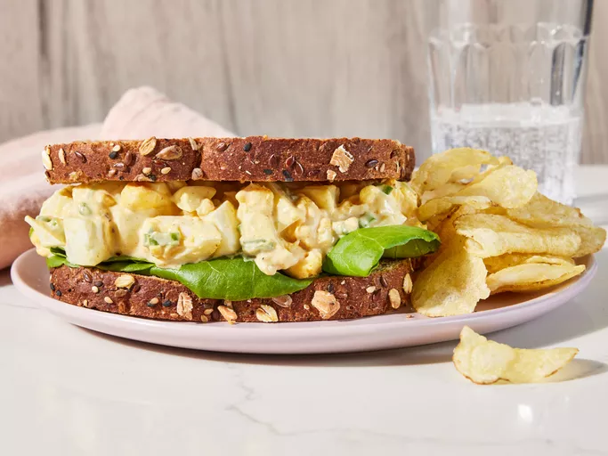
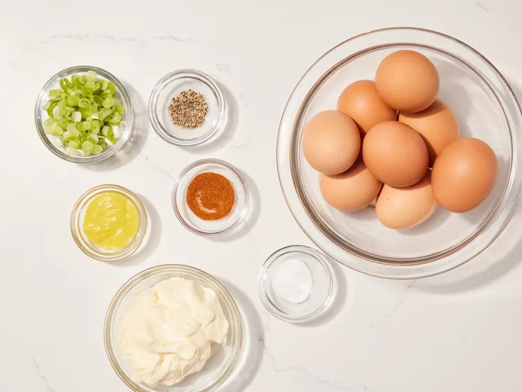
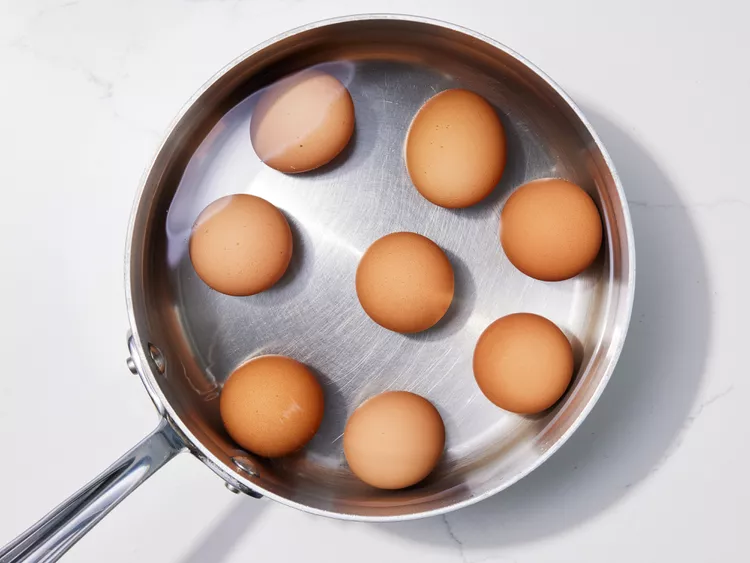
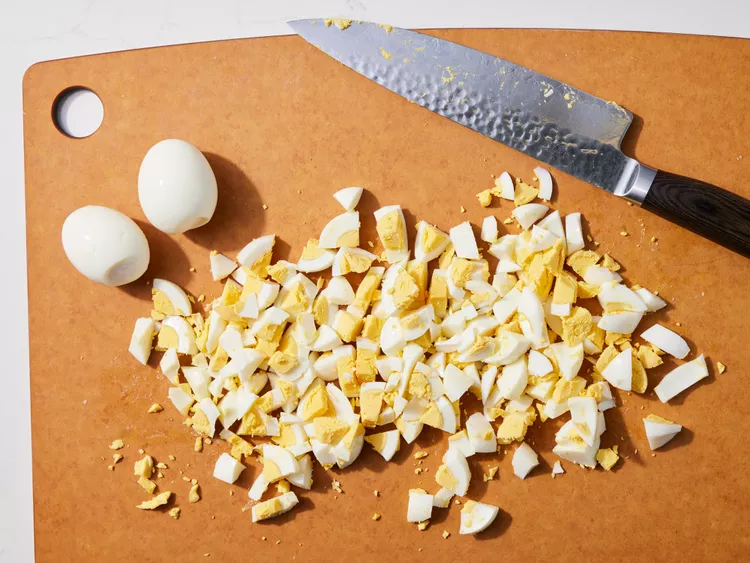
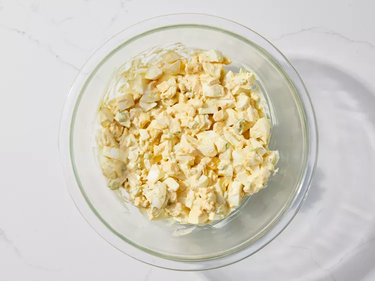
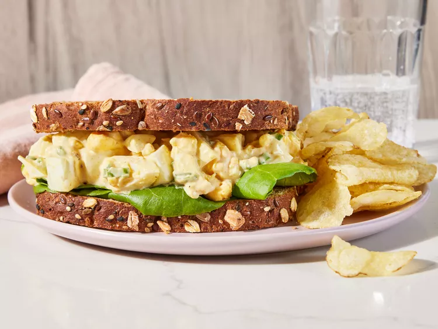

This best-ever potato salad is the creamiest, richest potato salad you will ever try. The secret is in the homemade dressing. I get nothing but raves every time I make this.
Gather all ingredients.
Place eggs in a saucepan and cover with cold water. Bring water to a boil and immediately remove from heat. Cover and let eggs stand in hot water for 10 to 12 minutes.
Remove eggs from hot water; cool, peel, and chop.
Place chopped eggs in a bowl; stir in mayonnaise, green onion, and mustard. Season with paprika, salt, and pepper.
Stir and serve on your favorite bread, crackers, or salad greens.
To make hard-boiled eggs, place eggs in a saucepan and cover with cold water. Bring to a boil, then immediately remove from the heat. Cover and let eggs stand in hot water for 10 to 12 minutes. Remove from the hot water, cool, and peel.